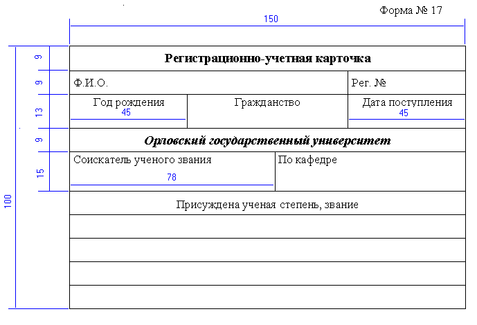

ЛАБОРАТОРНАЯ РАБОТА № WRD-04
РАБОТА С ТАБЛИЦАМИ В MS WORD. ЧАСТЬ 2
Теоретические сведения:
- Выделение элементов в
таблице.
- Добавление строк и столбцов
в таблицу. Удаление строк и
столбцов.
- Изменение ширины столбца
таблицы. Изменение высоты строки.
Задания:
- Создайте документ Table-2 и сохраните его в своей
сетевой папке.
- Создайте в документе таблицу в соответствии со
следующим рисунком:

Необходимо, чтобы размеры строк и столбцов
документа были именно такими, как на рисунке.
- Настройте выравнивание текста в каждой ячейке в
соответствии с рисунком.
- Размеры шрифтов: название "Регистрационно-учетная
карточка" - 14 пт; остальной текст - 13 пт
Начертание шрифтов - как на рисунке